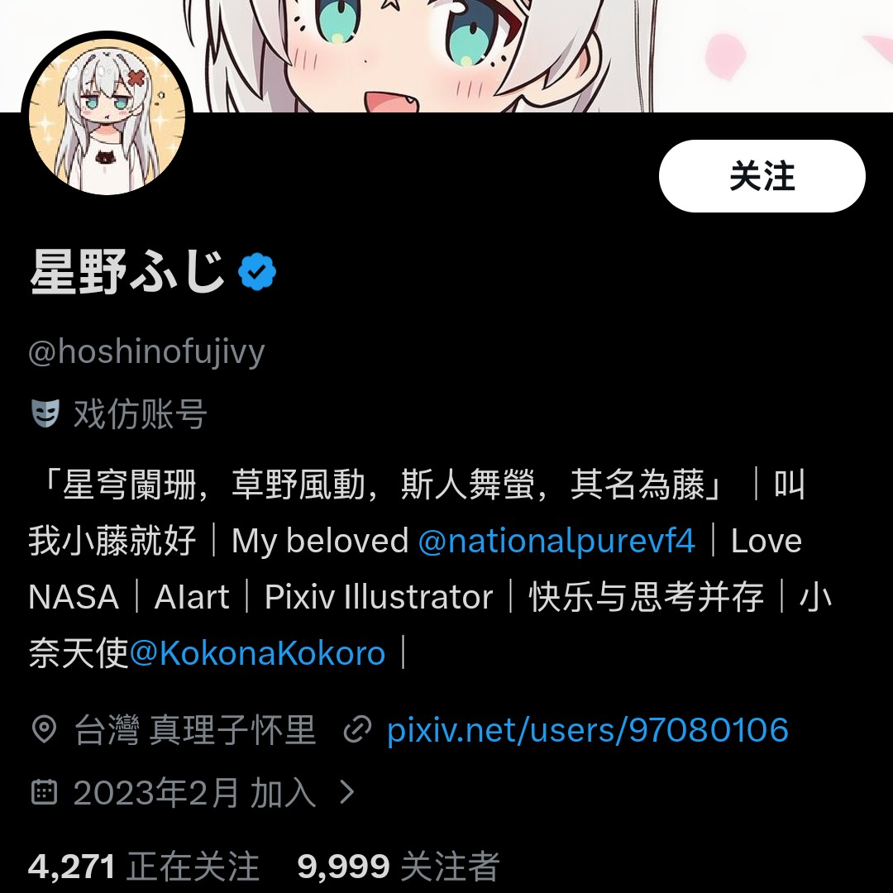
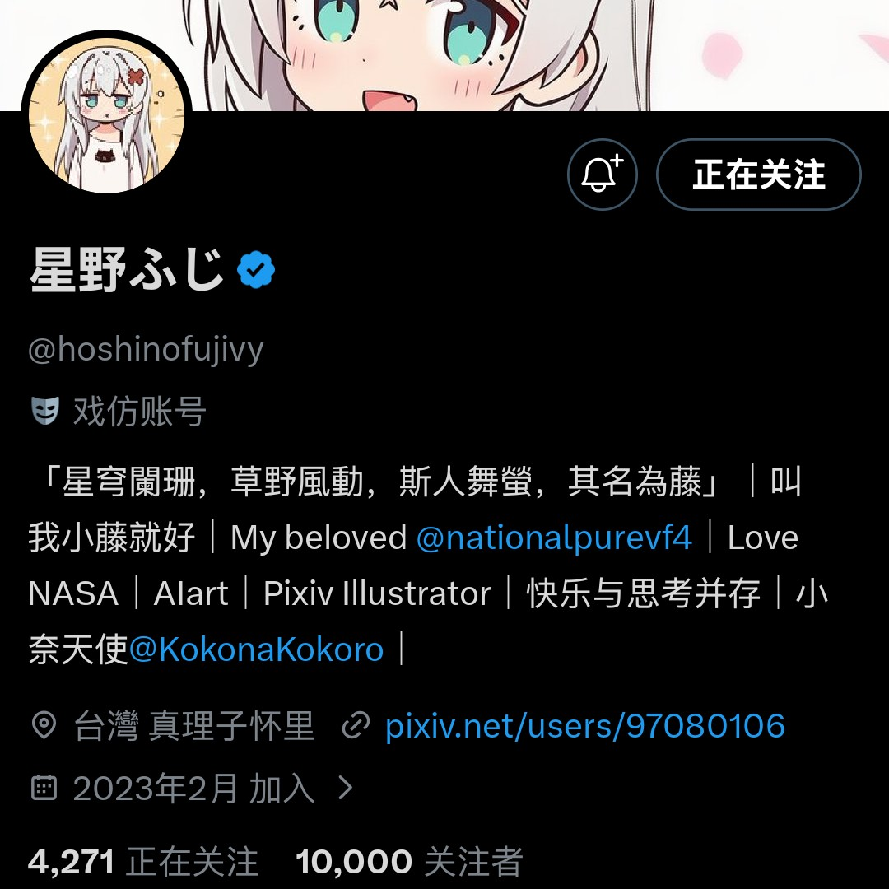

Pavlova
@pavlova233
@hoshinofuji___ 之前刚好卡了老号的 1w fo
相信你可以再来一次 !


星野ふじ（reborn）
@hoshinofuji___
好累....那么多美好的回忆全部化为泡影
本来以为自己的发言很把握度量了，讨厌的人直接拉黑，避免冲突加剧....
小藤真的很爱自己的账号，这就是我所有的价值体现了，像所爱之物一样守护着...结果还是逃不过封禁
抱歉，没了那个账号我就是个废物 https://t.co/mlQKHjBO9N